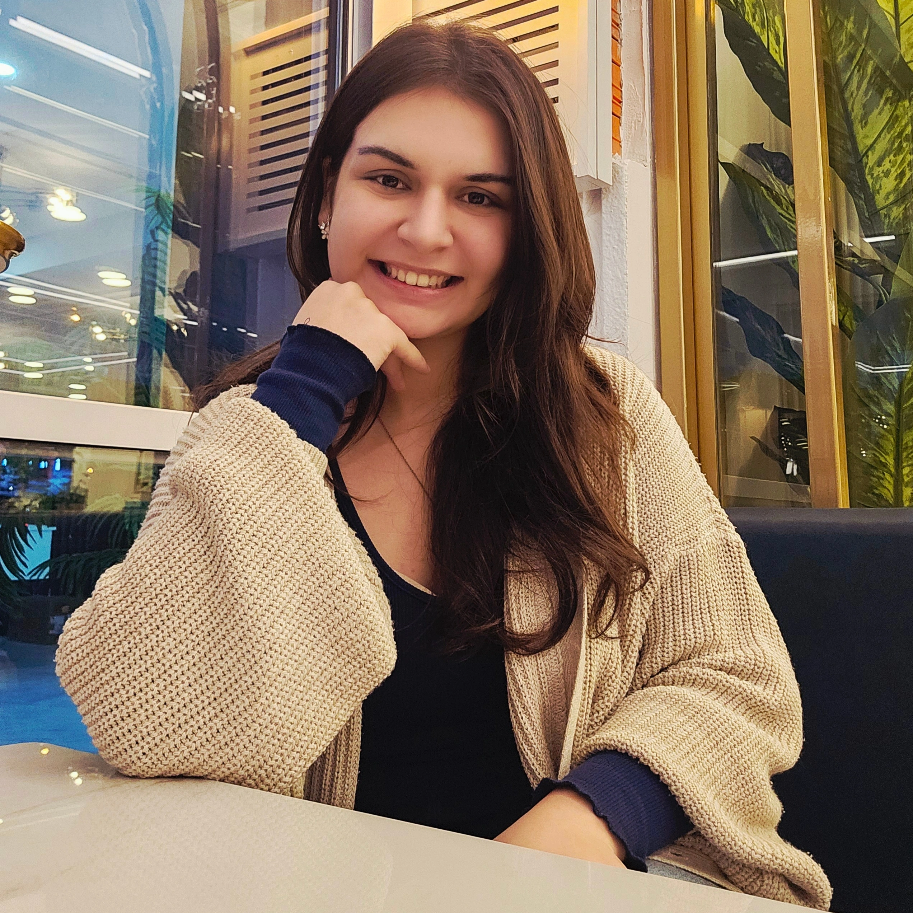

Computer Engineering Student
Computer Engineering student seeking internship opportunities to gain hands-on experience and further develop professional skills. Possesses intermediate- level knowledge of C, C#, and Python. Has a strong interest in technology and continuous learning. A highly motivated, fast learner and team-oriented individual, eager to apply both theoretical and practical knowledge in real-world projects while improving problem-solving skills.